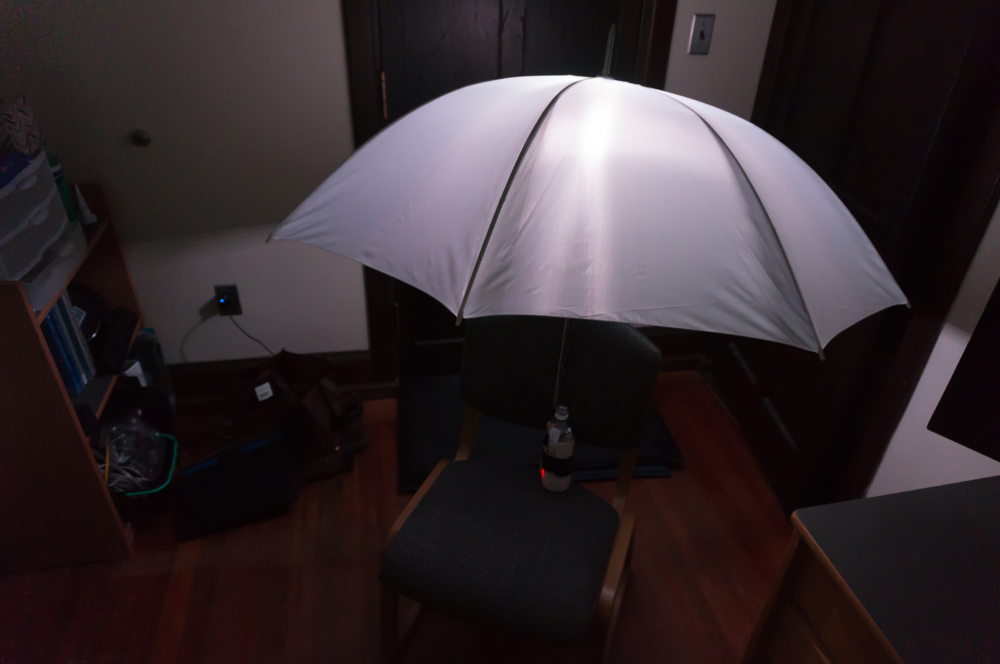
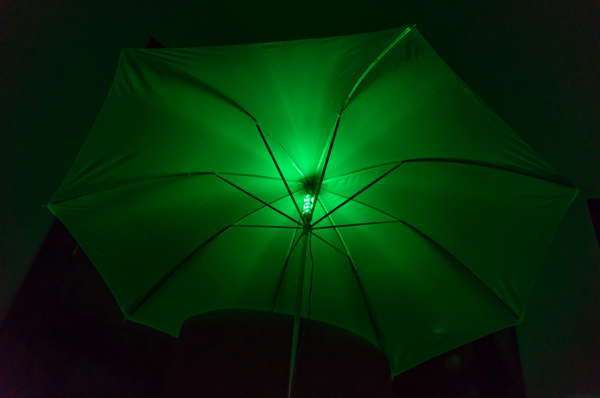
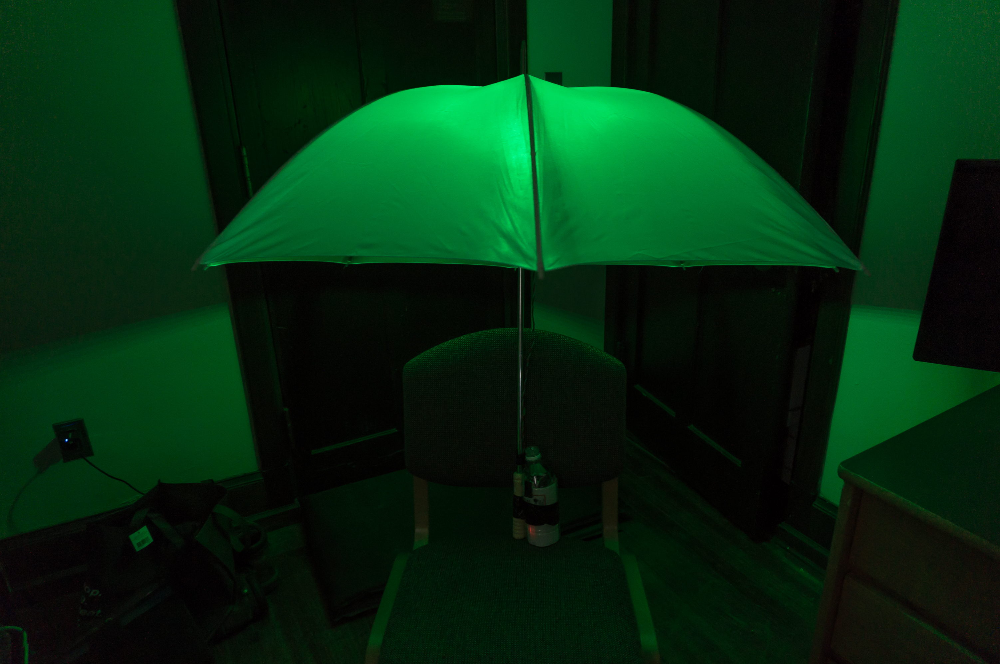
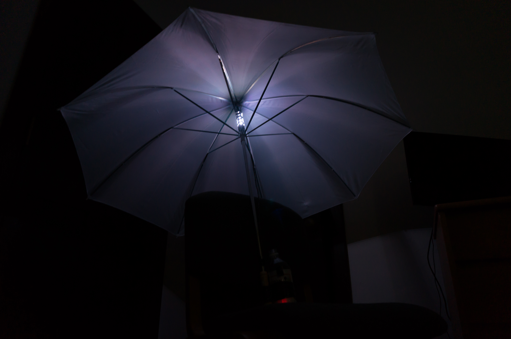

Light forms the primary mood of the world outdoors. The forces of nature move and shape light, filtering and distorting it, focusing it and taking it away. The color, rhythm, and texture of the light outdoors provides a reflection of the conditions of the environment we are in. Each day, these forces affect our mood as we step into the outdoors and become subject to this constantly changing source of light.
This project seeks to capture just a slice of this variety of lighting scenarios and present it in a handheld, interactive form through the creation of a dynamically illuminated umbrella. We are used to an umbrella being used as a shield from the weather, and something to hide from the elements beneath. What if, instead, this umbrella captured and emitted the feeling of the weather? The unassuming umbrella becomes a canvas for exploring how weather, environment, and mood can be captured and recreated using only light.
A Sunny Day
 Cast rays of lightThe simplest of environments is a plain, sunny, cloudless day. Light falls from all directions and fills one’s entire field of view. Though the sun itself is bright and visible, giving a primary direction to the light, the brightness of the sky as the powerful sunlight diffuses across it also diffuses this sense of direction. Shadows are flattened by the brightness filling from all directions. The environment thus is made to feel open, inviting, and relaxed.
The environment of a sunny day is represented quite simply by a plain, white glow on the umbrella. What’s important to note, though, is that the feeling of a sunny day doesn’t come across quite right until the temperature of the white light is adjusted just right. Pure sunlight has a subtle warmth to it, and by adjusting the light ever-so-slightly towards red, this pure color is produced. The shift towards a warmer color temperature changes the feeling of the umbrella, transforming it from feeling like a cold object to an inviting companion. The umbrella’s canopy also serves the important purpose of diffusing out the source of the light, like how the sky diffuses the sun. Compared to a single, point source of light, this spread of light feels significantly more natural and pleasant to look at.
When Light Strikes
A bolt of lightning, followed closely by the imminent clap of thunder, can put one on edge. Can the lightning flash alone convey that same, imposing feeling? Here, flashes of light are timed at random intervals to appear at a random direction on the umbrella. The light blinks on suddenly in one direction before rapidly fading away from view. A short, subtle fade captures and amplifies the effect of persistence of vision. The unpredictability of the light’s rhythm, combined with the large contrast between the bright flash and the dark background, creates a feeling of danger.
Passing Clouds
The light of a cloudy day is made distinct by the clouds which filter the sunlight. The resulting light feels colder and softer, yet less inviting. It spreads and diffuses out more than sunlight, yet its bleak appearance detracts from its feeling of openness. On a partly cloudy day, the passing clouds cast odd, unpredictable shadows on the ground. Without looking up at the sky, it is impossible to know when or where a shadow will appear. The environment adds an extra dynamic to the pleasantness of a sunny day, and makes the light more fluid in intensity. The constant changes in light can be both a distraction and a nuisance.
On the umbrella, the feeling of a partly cloudy day is captured by moving randomly-positioned shadows across the canopy. These shadows are amorphous, without a distinct and traceable shape, much like how the shadows left behind by a cloud appear to a person on the ground. The rhythm of the shadow is predictable when overhead, but the delay before the next is made random and unpredictable.
At Sunset
As the sun sets, the ambient light begins to fade away; the sky yellows as the light slides away with the sun. Normally a scene which plays out over several minutes, here the same pattern is captured in a brief few seconds. The effect is far more dramatic, especially without the eye having the chance to adjust and catch up to the shifting color palette. The color shift here is dramatized beyond reality, yet the effect in real life is similar: light shifts in color and changes one's view of their environment. As the light closes in on the horizon, the remaining point of light still appears bright against the rapidly dimming sky.
Unusual Light
 Looking into the green voidThe umbrella’s multicolored light source is capable of producing any sort of light, and by choosing a more unusual color, a strange environment is created. We have no physical reference for a room bathed in pure green light, and the result ranges from unusual to disturbing. One becomes much more aware of where the light points to and comes from, as nothing that falls within its cast appears natural.
 Where the light points, I look, tooIn Conclusion
Through this exploration of light, this interactive object demonstrates how the essential elements of light in an environment - real or artificial - can be captured and held in the hand. It also questions our relationship to objects and light, and how the two combined can affect our internal feelings and emotions.
 A soft shadow